MapStore Toolbars
The main toolbar of MapStore, used by the user to interact on the map viewer, are:
-
The Search bar
-
The Side toolbar
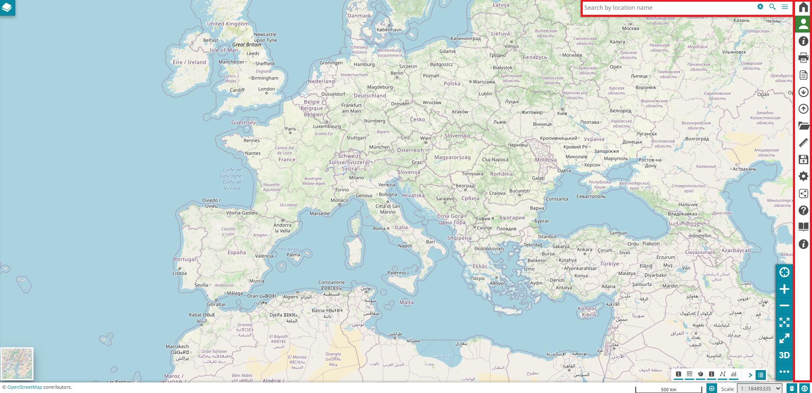
Search Bar
The search bar is a tool that allows the user to query the layers in order to find a specific information. In MapStore it is possible to perform the search in four different ways:
-
By Location name
-
By Configuring a search service
-
By Coordinates
-
By Current map CRS
-
By Bookmarks
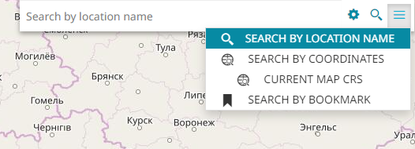
Search by location name
The Search by location name, set by default when a new map is created, allows the user to search places asking the OpenStreetMap Nominatim search engine. Typing the desired place, the Nominatim seach engine is queried; selecting then the desired record in the list of results, the map is automatically re-center/zoomed to the chosen area that is also highlighted:
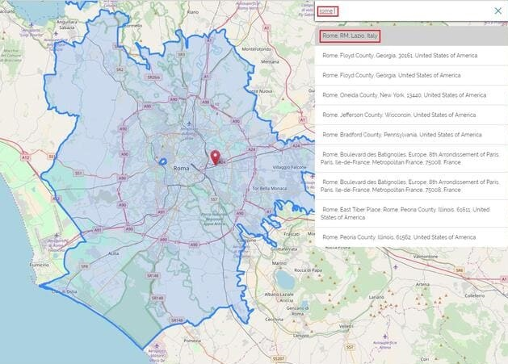
Configuring a search service
MapStore allows the user also to extend or replace the default OSM results with additional WFS Search Services. Selecting the Configure Search Services option , the following window opens:
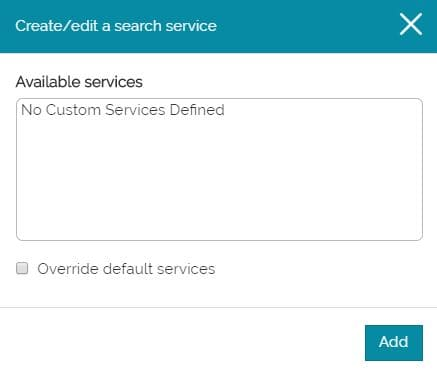
In order to create a new custom service, the  button brings the user to a page where he can set the WFS service properties, for example:
button brings the user to a page where he can set the WFS service properties, for example:
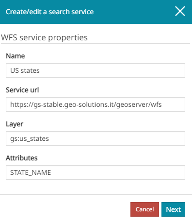
In particular, the information to be entered are:
-
Name of the service
-
WFS Service URL the user want to call
-
Layer to be queried
-
Specific Attributes (comma separeted fields) the user wants to query
When all the options are set, by clicking on the  button a new panel opens, where it is possible to choose the properties for the displayed results:
button a new panel opens, where it is possible to choose the properties for the displayed results:
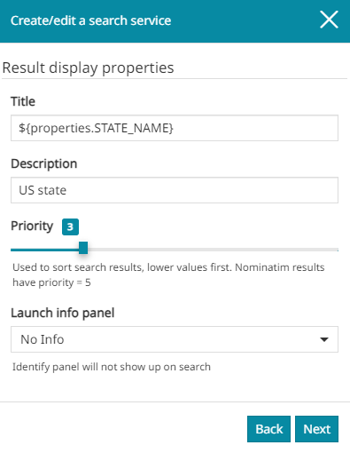
In this case, the user can define the following settings:
-
The Title displayed on the top of each results row (in the previous image, for example, the chosen title for the results is the one corresponding to the attribute NAME of the feature)
-
The Description to report in the results just below the title
-
The Priority, a parameter which determines the position of the records in the results list. Lower values imply a higher positions in the results list and vice versa. By default the OpenStreetMap Nominatim search engine result has priority equals to 5, therefore in order to see the custom results in a higher position a lower priority value is needed
-
The Launch Info panel allows the user to chose if and how the custom search interact with the Identify tool. In particular, with the No Info option, the Info panel doesn't show up once a record from the search results is selected. Selecting All Layers or Single Layer the Identify tool is triggered, and the related panel opens displaying the information of all/single layer(s) visible in the map. With Single Layer instead, the Identify tool is triggered only for the layer (if it is present and visible in the map) related to the selected record in the search result list.
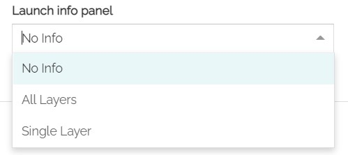
Note
Note that, selecting All Layers or Single Layer options, the point used for Identify request is a point belonging to the surface of the geometry of the selected record. Moreover, using Single Layer, the Identify request will filter results to the selected record and to its layer, using featureid which might be ignored by other servers, but can be used by GeoServer to select the specific feature of the results, when info_format is other than application/json. In order to achieve filtering of feature on servers other than GeoServer, one can select the format (info_format) as application/json for the layer to GetFeatureInfo from the layer settings in TOC to allow filtering features by using the ID of the selected record.
Once all the option are set, it is possible to move forward with the Next button that opens the Optional properties panel:
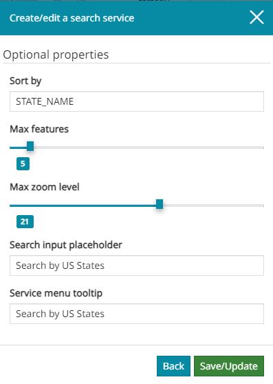
Here the user can choose:
-
To Sort the results by the specified attribute
-
The Max number of features (items) displayed in the custom search results
-
The Max level of zoom to be set for the map when opening from the custom search result
-
The text to insert as placeholder in the Search input when the search service is selected in the Service Menu
-
The text to be inserted as tooltip in the Service Menu is visible by moving the mouse over the search service
After the it is possible to see the custom WFS search service inside the Available services list:
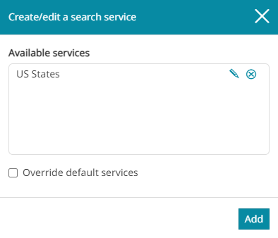
Once a search service is created, it is always possible to Edit it or Remove it from the list. By default the Override default services option is disabled, in that case performing a search not only the custom search service results are shown, but also the Nominatim ones:
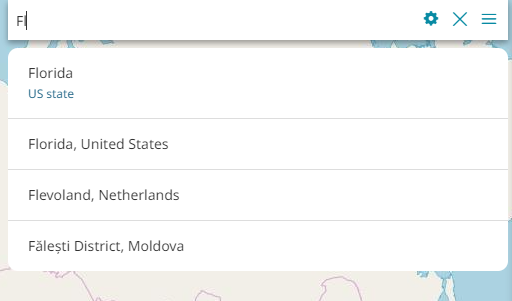
Once the Override default services option is enabled, only the custom search service results are shown:
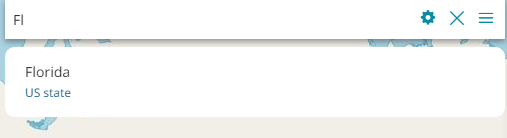
When there are multiple search services defined, by default MapStore performs the search operation on all of them according to the priority configured for each service (see above). Therefore, it is also possible for the user to select the desired search service from the menu to perform the search only on it. Selecting the Search Service Menu button , the following window opens:
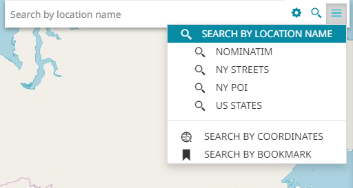
In the Search Menu, the user can choose one of the search services to use to carry out the search by clicking on one of them. An example could be the following:
Search by coordinates
Performing a Search by coordinates the user can zoom to a specific point and place a marker in its position. That point can be specified typing the coordinates in two different formats:
- Decimal (the default format)
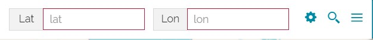
- Aeronautical (that can be chosen through the button)
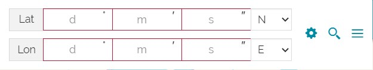
Once the coordinates are set, it is possible to perform the search with the button. The displayed result is similar to the following:
Search by current map CRS
MapStore allows the user to Search by current map CRS, which can zoom to a specific point and place a marker in its position. That point can be specified typing the X and Y coordinates of the map. Once the coordinates are set, it is possible to perform the search with the button. The displayed result is similar to the following:

Warning
The Search by current map CRS is available only if the the current map CRS is not the one normally used by Decimal and Aeronautical coordinates, which means EPSG:4326.
Search by bookmark
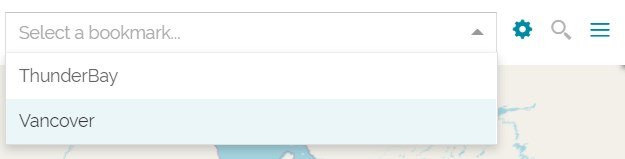
MapStore allows the user to search by the preconfigured bookmarks, which can zoom to a specific bounding box area or zoom along with reloading the visibility of the layers. Selecting the Bookmark settings icon, the following window opens:
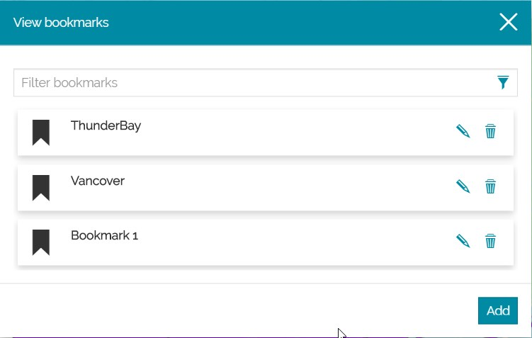
In order to create a new bookmark, the button brings up Add new bookmark page where the user set the Bookmark properties, for example:
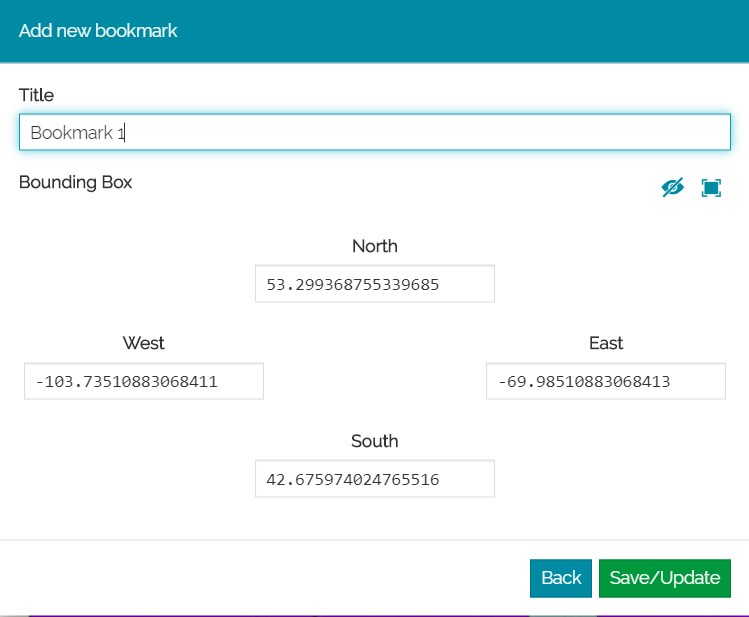
In particular, the information to be entered are:
-
Title of the bookmark
-
Bounding Box property the user wish to zoom to
-
West, South, East and North
-
Toggle layer visibility reload, to enable/disable the layer visibility reload when searched by bookmark
Note: The user can define bounding box value either manually or by selecting Use current view as bounding box to fetch the current bounding box values from the map view to populate the fields
When all the properties have been set, selecting the it is possible to see the newly added bookmark in the View bookmarks list:
Once a bookmark has been created, it is always possible to Edit it or Remove it from the list.
Side toolbar
The Side Toolbar is an important component, positioned on the right side of the map viewer, that provides to the user the access to different tools of MapStore. The following tools are the ones available by default:
In particular, with these options it is possible to:
-
Go back to the Homepage by clicking the button
-
Login/Logout by clicking the button (for more information see the Managing Users and Groups section)
-
Print the map by clicking the
 button
button -
Export map in
jsonformat by clicking the button -
Import files from your computer by clicking the button
-
Open the Catalog in order to connect to a remote service and add layers to the map by clicking the
 button
button -
Perform a Measure on the map by clicking the button
-
Save the map by clicking the button, in order to apply the changes made in an existing map. Selecting this option, the Resources Properties window opens, already filled with the current map properties
-
Save as when the user needs to save a copy of a map or save one for the first time by clicking the button. Selecting this option an empty Resources Properties window opens.
-
Delete Map in order to delete the current map by clicking the button
-
Access the map Settings by clicking the button, where the user can change the current Language and select the Identify options
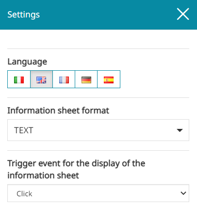
Note
When the 3D navigation is enabled, opening the Settings panel, the editor is allowed to configure some options related to the Cesium viewer. 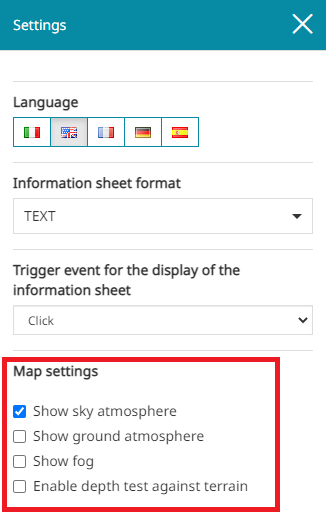
In particular, from the Map Settings it is possible to:
-
Enable the Show sky atmosphere to see the atmosphere around the globe
-
Enable the Show ground atmosphere to view the ground atmosphere on the globe when the camera is far away
-
Enable the Show fog to allow additional performance by rendering less geometry and dispatching less terrain requests
-
Enable the Depth test against terrain if primitives such as billboards, polylines, labels, etc. should be depth-tested against the terrain surface instead of always having them drawn on top of terrain unless they're on the opposite side of the globe
-
See the About this map panel by clicking the button, when Details are present
-
Share the map by clicking the button
-
Open the MapStore Documentation by clicking the button
-
Start the Tutorial by clicking the button
-
Know more information About MapStore and the deployed Version of MapStore by clicking the button
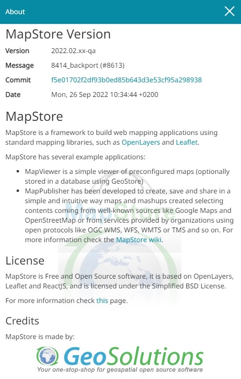
Warning
The Save, the Delete Map and the Share buttons are present in the Options Menu only when the map has already been saved once.